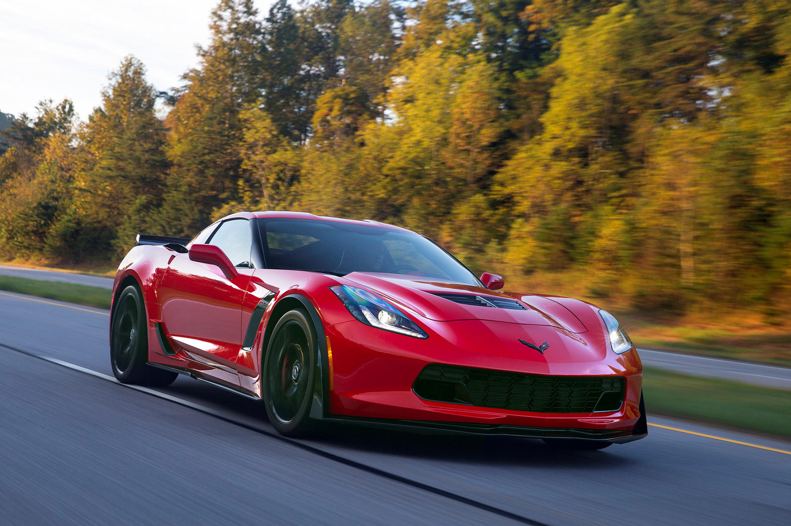

CHEVROLET CORVETTE
Buyer's Guide

Some people will always chase the newest and latest model of something, and others don't mind something a bit older. If you're looking for a bargain while still not missing out on too much, I currently recommend buying:
CORVETTE C7 GENERATION
Here's why:
- A used 2017 Corvette Stingray Z51 Coupe should run you about $45,000. I chose 2017 because it's about half the life-span of the C7 generation (which only lasted from 2014-2019) and I also chose the Z51 package because I think the package adds some real nice touches to the base model. We're talking 455 horsepower for a $45k car, vs 490 horsepower for a C8 which will probably run you upwards of $100,000 because dealers are marking up the price. The hype is real, and dealers pounce on it.
- You can still find C7s with respectable mileage. You'll find more used weekend cars than not, so you're pretty much getting something new for a bargain of a price. Typical mileage for the 2017 Corvette for example was 24,500 miles. Still a baby!
- C8 is still arguably new and 2021 is only its second year model. Problems are yet to come? Who knows, but it's generally not advised to buy a first year model, unless you have money to blow and you don't care for being the guinea pig. This is also the first time Chevrolet has gone with a mid-engine. Front engine with a rear wheel drive is tried and true, so with a C7 you'll be hard pressed to go wrong.
Image Source: https://www.carbuzz.com